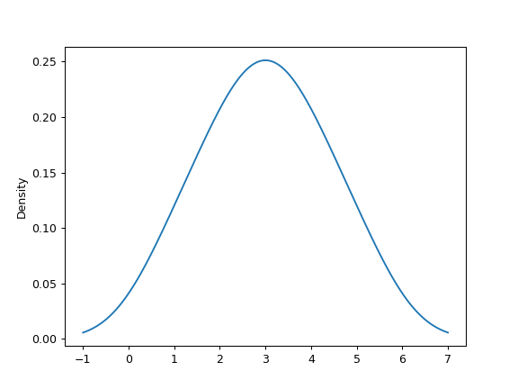
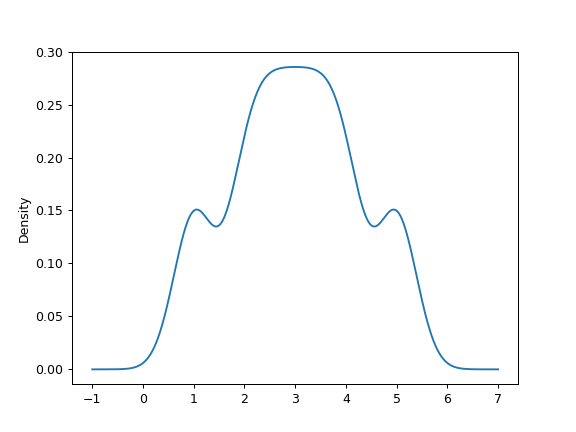
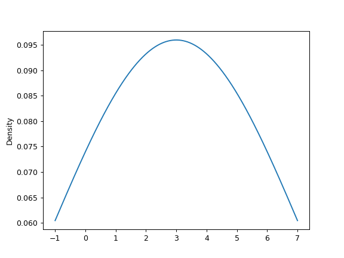
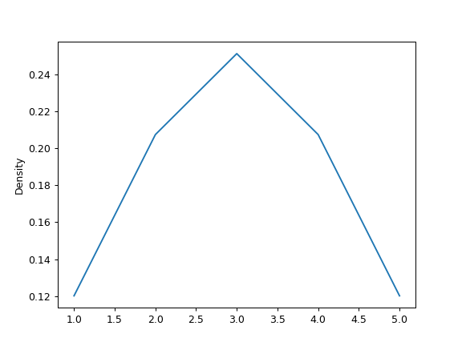

pandas.Series.plot.kde¶
-
Series.plot.kde(bw_method=None, ind=None, **kwds)[source]¶ Generate Kernel Density Estimate plot using Gaussian kernels.
In statistics, kernel density estimation (KDE) is a non-parametric way to estimate the probability density function (PDF) of a random variable. This function uses Gaussian kernels and includes automatic bandwith determination.
Parameters: bw_method : str, scalar or callable, optional
The method used to calculate the estimator bandwidth. This can be ‘scott’, ‘silverman’, a scalar constant or a callable. If None (default), ‘scott’ is used. See
scipy.stats.gaussian_kdefor more information.ind : NumPy array or integer, optional
Evaluation points for the estimated PDF. If None (default), 1000 equally spaced points are used. If ind is a NumPy array, the KDE is evaluated at the points passed. If ind is an integer, ind number of equally spaced points are used.
**kwds : optional
Additional keyword arguments are documented in
pandas.Series.plot().Returns: - axes : matplotlib.axes.Axes or numpy.ndarray of them
See also
scipy.stats.gaussian_kde- Representation of a kernel-density estimate using Gaussian kernels. This is the function used internally to estimate the PDF.
DataFrame.plot.kde- Generate a KDE plot for a DataFrame.
Examples
Given a Series of points randomly sampled from an unknown distribution, estimate its PDF using KDE with automatic bandwidth determination and plot the results, evaluating them at 1000 equally spaced points (default):
>>> s = pd.Series([1, 2, 2.5, 3, 3.5, 4, 5]) >>> ax = s.plot.kde()
A scalar bandwidth can be specified. Using a small bandwidth value can lead to overfitting, while using a large bandwidth value may result in underfitting:
>>> ax = s.plot.kde(bw_method=0.3)
>>> ax = s.plot.kde(bw_method=3)
Finally, the ind parameter determines the evaluation points for the plot of the estimated PDF:
>>> ax = s.plot.kde(ind=[1, 2, 3, 4, 5])
